Widget Palette: HTML Table Tests
<table> Creation
Steps
- Choose New HTML File from the New menu
- Open the HTML folder in the Widget palette.
- Drag a <table> widget onto the canvas.
- Notice a Smart Input dialog is displayed that looks much like the following:
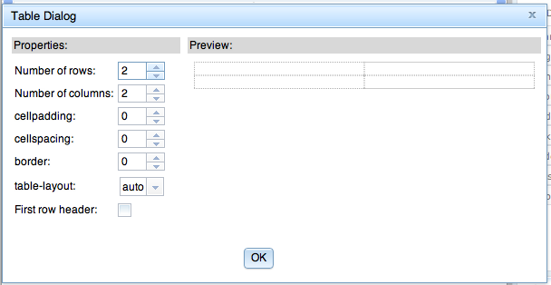
- Click OK.
Expected results
- An empty 2x2 table with width 100% is shown in the page editor.
Table Cell Smart Input
Steps
- Continuing with the file above, double click on the first cell in the first row of your <table> element.
- A basic Smart Input dialog should appear with an empty text field. Enter "red1" into the field and click OK.
- Similarly, use Smart Input to enter "green1" into the 2nd cell in the first row, "red2" in the first cell of the 2nd row,
and "green2" in the 2nd cell of the 2nd row.
Expected results
- Your <table> element should look something like the following in the page editor:
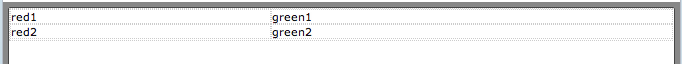
<table> Context Menu: Columns
Steps
- Continuing with the file from the previous section, select the first cell in the table and right-click to bring up the context menu. You should see a menu
like the one shown below. Any time a table-related child is selected (e.g., <td>, <th>, <tr>, <col>), there should be the same
set of table-related actions starting in the bottom half (though enablement will change depending on the selection). NOTE: clearly this menu is too
long, but it is anticipated as we change paradigms to use an "action bar" that this will be resolved.
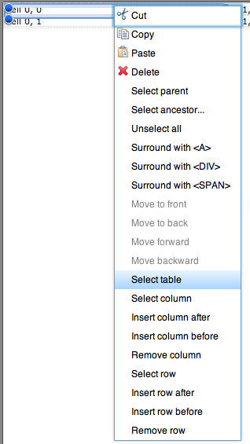
- From the context menu, choose Select column and a selection chrome should be drawn around all of the cells in the first column.
- In the properties palette, change the background of the column to red.
- Select the cell containing "green1". From the context menu, choose Select column and the 2nd column should be selected.
- In the properties palette, change the background color of the selected column to green.
- With the 2nd column still selected, select Insert column after and a new, empty, colorless column should be added to the end of the table. (Also, note when you
bring up the context menu on a selected column that only the following table-related actions should be enabled: Select table, Insert column after,
Insert column before, and Remove column.)
- With the 2nd column still selected, select Insert column before and a new, empty, colorless column should be added between the first and second columns.
- Double-click on the 1st cell in the (new) 2nd column and enter "yellow". Select the column and change the background color to yellow (you'll need to enter "yellow" in the box).
- Double-click on the 1st cell in the last column and enter "gray". Select the last column and change the background color to gray (you'll need to enter "gray" in the box).
- Select the cell labeled "red1" and from the context menu select Insert column before and a new, empty column should be added as the first column.
- With the cell labeled "red1" still selected, choose Insert column after and a new, empty column should be added as the 3rd column.
- Double-click on the 1st cell in the (new) 1st column and enter "orange". Select the column and change the background color to orange (you'll need to enter "orange" in the box).
- Double-click on the 1st cell in the 3rd column and enter "magenta". Select the column and change the background color to magenta (you'll need to enter "magenta" in the box).
At this point the table should have 6 columns and look something like the following:
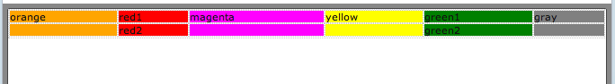
- Select a cell in the 1st column (the orange one), and from the context menu choose Remove column. The 1st column should be removed and the other columns should
maintain their content and colors.
- Select a cell in the last column (the gray one), and from the context menu choose Remove column. The last column should be removed and the other columns should
maintain their content and colors.
Expected results
- The various menu options should behave as described above and the table should look something like the following.
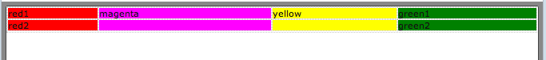
<table> Context Menu: Rows
Steps
- Continuing with the file from the previous section, select the first cell in the table (the one labeled "red1") and select Insert row after. A
new, empty row should be added as the 2nd row of the table (and its cells should be the same color as the columns they are in).
- With the "red1" cell still selected, choose Insert row before and a new, empty row should be added as the 1st row (and its cells should be
the same color as the columns they are in).
- Double-click on the 1st cell in the red column and enter "redX". Then, double-click on the 3rd cell in the red column and enter "redY".
To provide a frame of reference, your table should now have 4 rows and look something like the following:
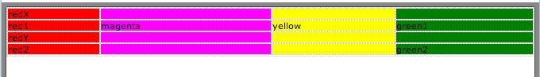
- Select the last cell in the red column containing "red2". From the context menu, choose Select row and the last row should be selected.
- From the context menu, select Insert row after and a new, empty row should be added as the last row. (Also, note when you
bring up the context menu on a selected row that only the following table-related actions should be enabled: Select table, Insert row after,
Insert row before, and Remove row.)
- With (what is now) the next to last row still selected, select Insert row before and a new, empty row should be added as the 4th row (between "redY" and "red2").
At this point the table should have 6 rows and look something like the following:
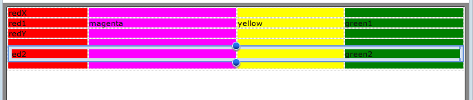
- Select a cell in the last row (the completely empty one), and from the context menu choose Remove row. The last row should be removed.
- Select a cell in the first row (the one starting with "redX"), and from the context menu choose Remove row. The first row should be removed.
Expected results
- The various menu options should behave as described above and the table should look something like the following.
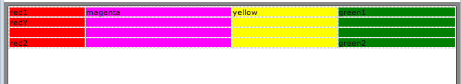
<table> Smart Input
Steps
- Continuing with the file from the previous section, select any cell in the table and choose Select table. The table
should become selected.
- Double-click on the selected table to bring up smart input. Verify the Number of rows and Number of columns fields are both set to 4, and
the table outline in the preview area contains 4 rows and 4 columns. The other fields should all be at their defaults.
- Change the fields on the panel as described in the list below. The preview table should update as you do so. Click OK.
- Number of rows to 6
- Number of columns to 8
- border to 5
- border-collapse to "separate". Possible values for border-collapse are described below:
- collapse -- Borders are collapsed into a single border when possible
- separate -- Borders are detached
- inherit -- inherited from the parent element
- table-layout to "auto". Possible values for table-layout are described below.
- auto -- column width is set by the widest unbreakable content in the cells
- fixed -- horizontal layout only depends on the table's width and the width of the columns, not the contents of the cells
- inherit -- inherited from the parent element
NOTE: since table-layout is dependent on cell contents, you likely won't see any change in the preview when changing the value.
- After the Smart Input is dismissed, your table should look something like the following in the page editor. Note the new rows and columns were added after the
existing rows and columns.
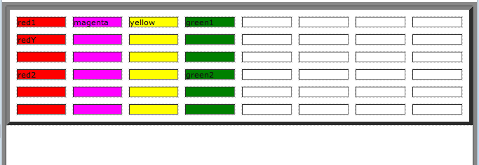
- Double-click on the selected table to bring up smart input again. Verify the values in the fields accurately reflect what you set before clicking OK.
- Change Number of rows to 2 and Number of columns to 3. Verify the preview table updates appropriately, and and click OK.
- After the Smart Input is dismissed, your table should look something like the following in the page editor. Notes that rows and columns were removed to leave the cells that
were in the 2x3 grid in the upper left corner of the table.
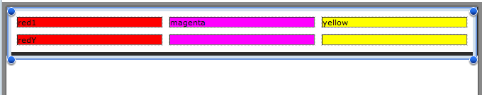
Expected results
- See above.
<table> Smart Input (Header Row)
Steps
- Unfortunately, document.css wipes out the styling you'd expect to see in <th> elements. So, go into app.css and add the following style so we can see
a difference between <td> and <th> elements as we do the rest of the steps in this section. Be sure to save app.css after adding the style.
#myapp th {
font-weight: bold;
text-align: center;
}
- Save and reopen the file from the previous section (to pick up the changes to app.css)
- Select the table and double-click to bring up smart input. Verify the field values
reflect what you've entered earlier (in particular, Number of rows should be 2 and Number of columns should be 3).
- Check the checkbox for First row header. The cells in the first row of the preview table should each be populated with the string
"TH". NOTE: The preview in the dialog does not make use of any style defs in the page editor (like in app.css), so there will be no
styling of the text in the preview.
- Click OK. The first row of the table should now have <th> elements and any text in the first row should be bold and centered.
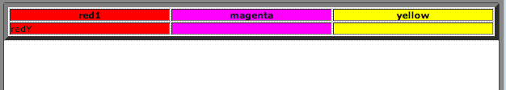
- Double-click to bring up the table's smart input dialog again. Verify First row header is still checked. Uncheck it and verify the
cell contents (the "TH" strings) in the first row of the preview table are removed.
- Click OK. Verify the first row of the table in the page editor is rendered normally (e.g., without with header styling).
Expected results
- See above.
<table>: Resizing Children
Steps
- Continuing with the file from the previous section, select any cell and verify there are not any resize handles.
- From the context menu of the cell you have selected, choose Select column. Verify that resize handles appear on the selected column
and that you can use them to change the width (and not height) of the column.
- Select another cell and choose Select row from the cell's context menu. Verify that resize handles appear on the selected row
and that you can use them to change the height (and not width) of the row.
- Save an close your file.
- Reopen it and ensure your size changes have been persisted.
Expected results
- See above.